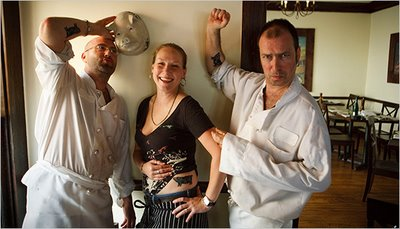

What a toothsome surprise it was so wake and find a link (kindly forwarded by Colleen O'Donnell) to Frank Bruni's NYT review of Feast Houston,
a Brit-owned restaurant in my dear hometown devoted to those benchwarmer cuts--trotters, cheeks, kidneys, livers, stomachs, and brains--of which
I have been writing lately. The restaurant opened a year ago.
On most nights there is also braised chicken, though it goes by a name that’s not familiar to most American diners: cock-a-leekie. That’s a
British staple on a menu rife with such terminology and fare: haggis, tatties (mashed potatoes) and neeps (turnips); cullen skink (a Scottish
seafood stew); bubble and squeak (a potato hash of sorts); black pudding (a kind of blood sausage). To dine at Feast you need not just courage
but a glossary.
When using all the animal parts, avoiding anatomical jokes is near impossible (how do you serve sheep's testicles without a wink and a smile?):
“With some of the things we’ve done, there’s schoolboy humor involved,” Mr. Silk conceded.
He was referring to a dish they called (accurately, as it happens) tongue in breast, and to another they called tongue in the hole, because
it was a riff on the British classic toad in the hole."
As as a frugal cook and as someone who loves the marginalized and underrecognized, I naturally admire that these cooks welcome all creatures,
strange and small:
"The fisherman who supplies Feast knows that Mr. Knight and Mr. Silk will take and cook critters from the Gulf of Mexico that are hauled in
accidentally (the by-catch) and might otherwise be thrown away. Last week Feast smoked and served footlong baby barracudas.
On several occasions they’ve served an odd-looking Gulf fish whose real name they don’t even know but whose nickname greatly amuses them.
The fish is gray in color, has an enormous gaping mouth and is referred to as a “mother-in-law.”
Even Frank Bruni attests to the practicality of serving organ meats, exotic though they may be:
"There is an economic advantage to that: Feast is able to keep most of its appetizers under $10 and most of its entrees under $25, in part by
using less widely desired cuts of meat. The restaurant has never served filet mignon, and while there was pork belly, pork cheek, pig’s tail and
pig’s head terrine the night I dined there, there wasn’t anything like a pork chop."
These are men and woman after my own heart. The use of offal meats is no marketing gimmick; it comes for a reverence for the whole animal.
“I could be a vegetarian if I let my conscience guide me. But another way of giving an animal the respect it deserves is using as much of the
animal as possible.”
I couldn't have said it better myself.
*Sadly, but not surprisingly, Feast Houston is not turning people away at the door. I hope all my Houstonian homies will give it a chance and
tell me how it was.
Posted 9th April 2009 by Dusty Adams
|